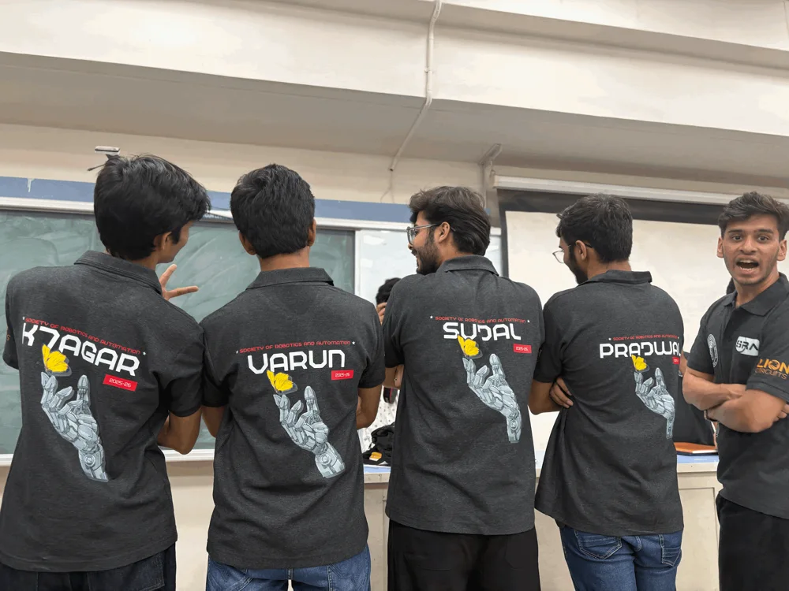
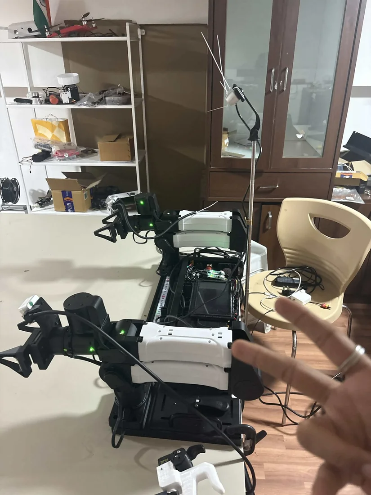
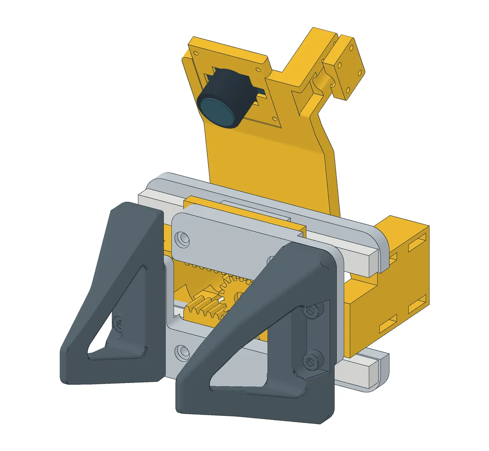

projects · 2025–2026
robot learning
From building robot kits and teaching manipulation to training and deploying learned policies.
This record follows my work through sim-to-real reinforcement learning, behavioral cloning, pretrained models, and longer manipulation tasks.
hardware & workshops / SRA-VJTI
robot kits and manipulation workshops
At SRA-VJTI, the Society of Robotics and Automation at VJTI, I contributed to robot kits and workshops for students.
For Wall-E, I helped manufacture, test, and sell robot kits with the team for 300+ students. Wall-E is a two-wheeled, ESP32-based robot for learning line following, self-balancing, PID control, and embedded systems. The firmware and workshop material are open source.


from balancing to manipulation
I also taught robotic manipulation to 100+ students through Mario. It is a small three-degree-of-freedom arm used to explore forward and inverse kinematics, ROS, simulation, and real hardware. The robot design and code are open source too.

Photos and contribution notes from my build log.


01 / July–August 2025
sim-to-real cube pickup
In July 2025, I began deploying a simulation-trained pickup policy on a real arm. The setup used vision and PPO, with FPO still in progress, building on Stone Tao’s work.
The August 6 trials progressed from a missed pickup to progress on the grasp, followed by the August 7 cube pickup shown above.
The earlier attempt — 31 July 2025
02 / November 2025
behavioral cloning and human demonstrations
In November, I moved to behavioral cloning, training a policy from demonstrations to pick up a wheel and move it toward a box.
This led toward experiments with larger vision-action models, with compute sponsored by Prime Intellect.
I also applied HaMeR to Egocentric-10K from Eddy Xu / Build AI to reconstruct 3D hand meshes from human demonstrations.
03 / April–May 2026
pretrained policies and remote inference
I deployed Ai2's MolmoAct 2 on my setup, with unseen objects and an unseen environment. It could perform some tasks out of the box, with limited capability. I observed retries and gripper adjustments, but dexterous tasks remained difficult.
I ran the model on a single RTX 4090 and wrote my own inference engine.

robodal: serving π₀ remotely
In robodal, I built an inference engine to serve Physical Intelligence's π₀ from Modal and benchmarked round-trip latency. In the April 12 benchmark, median latency was 45.6 ms locally, 294.5 ms over the TCP portal, 374.1 ms over WebSocket, and 493.3 ms over HTTP (30 measured calls, 5 warmups).
The closed-loop tests used the ALOHA transfer-cube simulator, with 5–10 episodes per setting.
04 / July 2026
Patch Policy reproduction
Patch Policy, by Zhou, Cui and colleagues, uses dense image-patch features instead of pooling the whole image into one representation. I reproduced it on Push-T, then tried it on hardware.
| Metric | Reproduction | Paper target |
|---|---|---|
| Final coverage | 0.772 ± 0.032 | 0.83 |
| Maximum coverage | 0.821 ± 0.028 | — |
| Success (coverage > 0.95) | 52% | — |
Coverage measures overlap with the target. Values and ± notation are as reported in the repository.
The policy sometimes reached the target and then drifted away. The implementation differences and possible fixes are documented alongside the code.
Hardware notes identify idle demonstration frames as a possible cause of limited motion. The notes describe trimming idle prefixes and using a longer action horizon as the next adjustments to try.
05 / August–September 2026
physical control and multi-step tasks
Atari, with an actual joystick
We built an RL setup for Atari using an external camera to observe the screen and STS3215 servos to move a physical joystick.
This was a build with @4rynv, @sahilsapage, and @LakshyaLalwani7. Setup details ↗

towel and T-shirt folding
I went from a zero-shot towel-folding attempt to T-shirt folding with Physical Intelligence's π0.5. Then came Astra experiments with Sujal, from standing a block upright to wiping and folding.
In the Astra trial, the robot made an initial fold but disrupted it with later actions.
06 / September 2026
tools for collecting demonstrations
I am building a handheld UMI-style gripper, inspired by Yosub Shin's yam-umi. The clip below shows a manual test of the interface.
I have also been trying human video → storyboard → robot action, extending the earlier work on human demonstrations.


07 / full stack
cloth folding on our own infrastructure
Contact me for project details or collaboration.